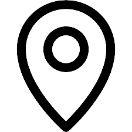

João Marcelo
Dados Pessoais

rua Angelim, 92, Sarzedo, Minas Gerais 32450-000
(31) 98690-2293
contato.joaomarceloalmeida@gmail.com
06/05/2002
Redes Sociais
Objetivo
Em busca de crescimento profissional
Competências
Facilidade de aprender e memorizar novas informações
Facilidade de relacionamento interpessoal
Foco e persistência para o alcance de metas
Idiomas
Inglês
Avançado
Espanhol
Básico
Formação
Escolaridade
Ensino Médio Completo
Curso
Técnico em Administração
Cursando
Certified Tech Developer
Habilidades